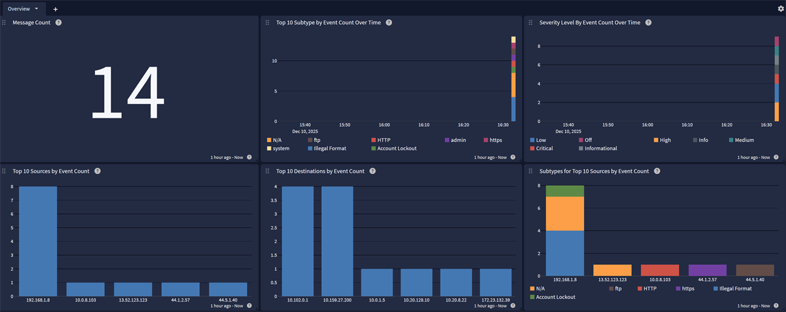

Fortinet's FortiWeb is a web application firewall (WAF) that protects web applications and APIs from common and advanced threats. This content pack processes FortiWeb event logs, providing normalization and enrichment for key security and access events.
FortiWeb version 7.6.0+
A Graylog Enterprise license, running Graylog version 7.0+.
Configure FortiWeb to transmit Syslog to your Graylog server Syslog input.
This technology pack includes 1 stream:
This technology pack includes 1 index set definition:
Configure your FortiWeb device(s) following the instructions in the Graylog Syslog Inputs guide using TCP as the transport and format BSD.
date=2023-10-13 time=13:55:23 log_id=30001000 msg_id=000000041654 device_id=FVVM08TM23001463 vd="root" timezone="(GMT+8:00)Taipei" timezone_dayst="GMTe-8" type=traffic subtype="https" pri=notice proto=tcp service=https/tls1.2 status=success reason=none policy=RL-HTTP-A-44.1.0.2-HCP-AlertDeny original_src=44.1.2.57 src=44.1.2.57 src_port=10000 dst=10.20.128.10 dst_port=8080 http_request_time=0 http_response_time=0 http_request_bytes=1401 http_response_bytes=38734 http_method=get http_url="/admin" http_agent="Mozilla/5.0 (Windows NT 10.0; Win64; x64) AppleWebKit/537.36 (KHTML, like Gecko) Chrome/92.0.4515.159 Safari/537.36" http_retcode=500 msg="HTTPS get request from 44.1.2.57:10000 to 10.20.128.10:8080, clievent(0:0), svrevent(0:0)" original_srccountry="United States" srccountry="United States" content_switch_name="none" server_pool_name="tester-10.20.128.10-11-12-HTTP-8080" http_host="msg.gov.hu" user_name="Unknown" http_refer="none" http_version="1.x" dev_id=3CD3AC15B0B5CE4760A202E0350F82BD6222 cipher_suite="TLS_DHE_RSA_WITH_AES_128_GCM_SHA256"
Rules to parse, normalize, and enrich FortiWeb Content Pack messages.
A FortiWeb Spotlight content pack.
GIM categorization is provided for the following messages:
| fortiweb_subtype | gim_event_type_code |
|---|---|
| HTTP | 120000 |
| HTTPS | 120000 |
| ftp | 120000 |
| admin | 129999 |
| system | 129999 |
| sql-injection | 300001 |
| xss | 300001 |
| csrf | 300001 |
| path-traversal | 300001 |
| command-injection | 300001 |
| file-upload | 300001 |
| directory-traversal | 300001 |
| protocol-anomaly | 300001 |
| dll-injection | 300001 |
The FortiWeb Spotlight Pack offers an overview dashboard with the following tabs:
